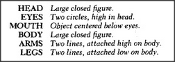
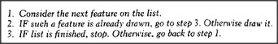

We normally assume that children see the same as we do and only lack our tricky muscle skills. But that doesn't explain why so many children produce this particular kind of drawing, nor why they seem so satisfied with them. In any case, this phenomenon makes it seem very unlikely that a child has a realistic, picturelike image in mind.
Now let's consider a different idea. We'll suppose that the child does not have anything like a picture in mind, but only some network of relationships that various features must satisfy. For example, a child's person-drawing feature-network might consist of the following features and relations:
To convert this description into an actual drawing, the child must employ some sort of drawing procedure. Here's one in which the process simply works its way down the feature list, like a little computer program:
When the child starts to draw, the first item on the list is large closed figure. Since there isn't any such thing yet, the child draws one: that's the head. Next the eyes and mouth get drawn. But then, when it comes to drawing the body feature, step 2 of the procedure finds that a large closed figure has already been drawn. Accordingly, nothing new is required, and the procedure simply advances to step 3. As a result, the child goes on to attach the arms and legs to the feature that has been assigned to both the body and the head.
An adult would never make such a mistake, since once some feature has been assigned to represent a head, that feature is thereafter regarded as used up or occupied and cannot represent anything else. But the child has less capacity or inclination for keeping track. Accordingly, since that large closed figure satisfies the description's requirements for both the head and the body — albeit at different moments of time — there is no cause for discontent. The little artist has satisfied all the conditions required by its description!